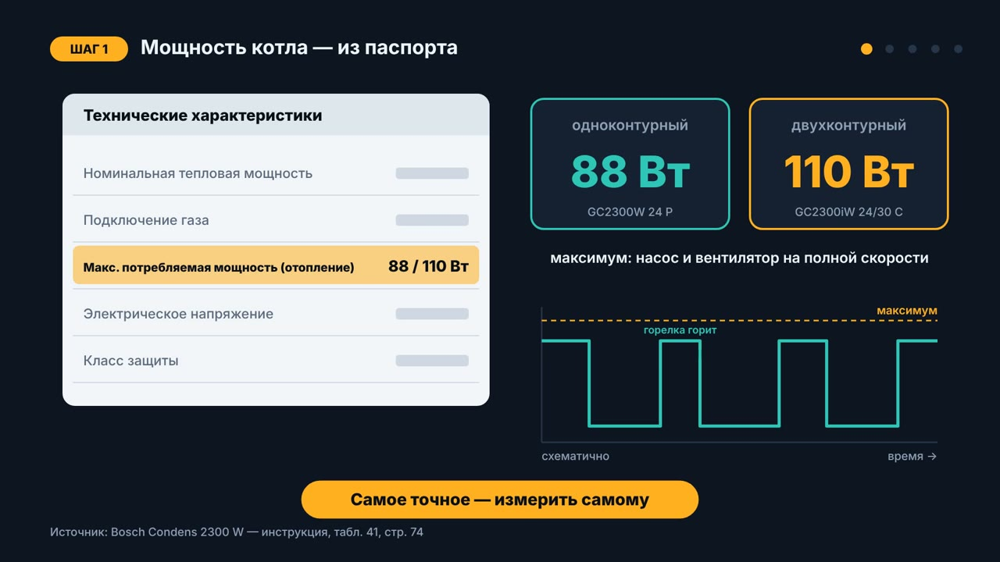
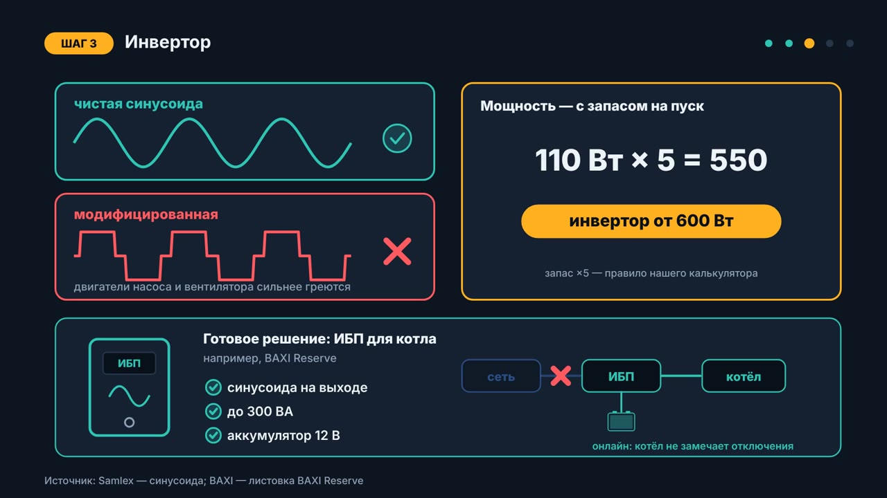

Резервное питание газового котла
Газ есть, а свет отключили — и батареи остывают: насос, вентилятор, розжиг и автоматика котла питаются от розетки. Котёл потребляет около 100 Вт, поэтому его можно держать в работе от аккумулятора с инвертором. Считаем по шагам и подключаем безопасно.
Ролик, 6:31. Не открывается? Смотреть на YouTube или читайте разбор ниже — в нём всё то же самое.
Впишите мощность своего котла и время отключения — калькулятор посчитает аккумулятор, инвертор и сколько часов продержится ваш аккумулятор.
Открыть калькуляторЗачем котлу электричество
Насос гоняет горячую воду по батареям. У турбированных и конденсационных котлов вентилятор подаёт воздух в горелку и выводит дым. Электроника поджигает газ, следит за пламенем и держит температуру. Пропадает напряжение — автоматика останавливает котёл. Так задумано для безопасности: наша задача — не обойти защиту, а дать котлу его ~100 Вт, пока сети нет.
1Мощность котла
Откройте паспорт, таблицу технических характеристик, и найдите строку «максимальная потребляемая мощность». Например, у Bosch Condens 2300 W — 88 Вт у одноконтурной модели и 110 Вт у двухконтурной. Это максимум: насос и вентилятор на полной скорости. Обычно котёл берёт меньше — горелка то включается, то гаснет.

Как измерить точно
Розеточный ваттметр — переходник с экраном между розеткой и вилкой. Берите модель с заземляющим контактом. Включите котёл через ваттметр, сбросьте счётчик и оставьте на сутки — лучше в морозный день; для двухконтурного — обычный день с душем и посудой. Через сутки разделите киловатт-часы на 24 часа.
Среднее подставьте в калькулятор — аккумулятор получится меньше. А инвертор всё равно выбирайте по паспортной мощности: на пуске котёл берёт больше среднего.
2Энергия и аккумулятор
Считаем с запасом, по максимальной мощности, на 6 часов отключения. КПД инвертора 0,9, холостой ход 8 Вт и разряд литиевого аккумулятора до 80 % — как в выпуске 1.
Аккумулятор LiFePO4 на 100 А·ч — это 1280 Вт·ч, он справляется с запасом. На 12 часов нужно около 1953 Вт·ч — два таких аккумулятора. И это по максимуму: в реальности котёл продержится дольше.

Что ещё питать вместе с котлом
Часто есть второй насос — на тёплый пол или бойлер (например, у Grundfos ALPHA2 потребляемая мощность от 3 до 34 Вт) и роутер — около 12 Вт. Складывайте их с котлом и считайте по той же формуле. Но в инструкции Bosch сказано: не подключайте других потребителей к сетевому подключению котла. Поэтому котёл — в свою розетку инвертора, остальное — в другие, но не в один тройник с котлом.

3Инвертор
Только с чистой синусоидой: на модифицированной двигатели насоса и вентилятора сильнее греются. Мощность — с запасом на пуск мотора, по правилу нашего калькулятора: 110 Вт × 5 = 550 Вт, значит, инвертор от 600 Вт длительной мощности.
Есть и готовое решение — ИБП для котлов. Например, у BAXI Reserve на выходе синусоида, мощность до 300 ВА, к нему подключают аккумулятор на 12 В. Он работает в режиме онлайн, поэтому котёл не замечает отключения.

4Фаза и заземление
Котлы чувствительны к подключению. Navien в инструкции требует при пуске проверить фазировку и наличие заземления, а Fondital запрещает подключение к электрооборудованию без правильно выполненной системы заземления. При работе от инвертора правило то же. Если от инвертора котёл не разжигается и показывает ошибку пламени — не разбирайте котёл, позовите электрика: пусть проверит фазировку и заземление на выходе инвертора по его инструкции.
5Подключение
Котёл на вилке: в инструкции Bosch так и написано — вставьте вилку в розетку с заземляющим контактом. При отключении вилку переставляют в розетку инвертора или держат котёл на ИБП постоянно. Котёл подключён к щитку напрямую, без вилки, — электрик поставит розетку или переключатель «сеть — резерв».

Пять ошибок
- Инвертор с модифицированной синусоидой — насос и вентилятор греются.
- Тройник с чайником или обогревателем — мощный прибор перегрузит инвертор, и котёл остановится вместе с ним.
- Автомобильный аккумулятор. Victron прямо пишет: глубокий разряд быстро разрушает стартерный аккумулятор. Нужен аккумулятор для глубоких циклов — литиевый или специальный свинцовый.
- Забыть про фазировку и заземление.
- Инвертор в розетку квартиры — обратная подача.
Источники
- Bosch Condens 2300 W — инструкция по монтажу и техобслуживанию: 88 / 110 Вт (табл. 41, стр. 74); вилка в розетку с заземляющим контактом (раздел 6.2) и запрет других потребителей на подключении котла (раздел 6.1), стр. 27.
- Navien Deluxe C Plus — руководство: проверить фазировку и наличие заземления (стр. 61).
- Fondital KC 24 — инструкция: запрет подключения без заземления (стр. 4).
- BAXI Reserve — листовка: синусоида, до 300 ВА, батарея 12 В, режим онлайн.
- Grundfos ALPHA2 25-60 130 — лист данных: потребляемая мощность 3–34 Вт.
- Victron Energy — типы аккумуляторов: глубокий разряд разрушает стартерный аккумулятор.
- Samlex — чистая и модифицированная синусоида.
Проверено 15 ноября 2026 г. Нашли ошибку — напишите в комментариях под роликом.